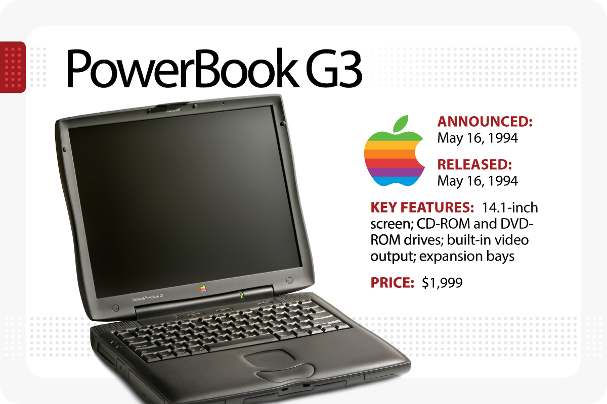
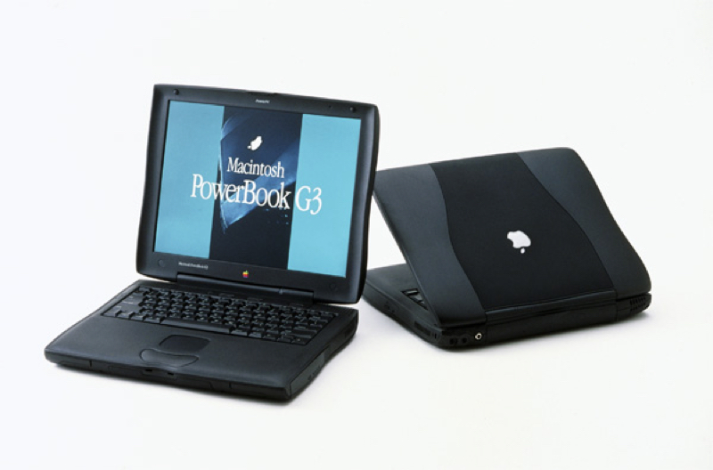

The PowerBook G3 is a series of laptop Macintosh personal computers designed, manufactured and sold by Apple Computer, Inc. from 1997 to 2001. It was the first laptop to use the PowerPC G3 (PPC740/750) series of microprocessors, and was marketed as the fastest laptop in the world for its entire production run. The PowerBook G3 was succeeded by the PowerBook G4.
The fourth generation of PowerBook G3 (Pismo), was introduced in February 2000. It was code named "Pismo" after the City of Pismo Beach, California. For this generation Apple dropped "G3" from the name.
The original Pismo was rumored to be a latchless design, akin to the iBook, which is similar in specification. Apple settled on fitting the Pismo board into the form factor of the previous Lombard G3 PowerBook, but with many improvements. The Pismo was available at CPU speeds of 400 MHz or 500 MHz, with a front side bus speed of 100 MHz (one-third swifter than the Lombard's front side bus); it also implemented a unified motherboard architecture, and replaced SCSI with the newer FireWire interface (IEEE-1394). The PCI graphics used on the Lombard were updated to an AGP-connected ATi Rage Mobility 128, though the video memory was kept at 8 MB, and could not be upgraded, and the screen's resolution was the same as well. A 6× DVD-ROM drive became standard.[4] It was also the first PowerBook with AirPort networking as an official option (although it could be added to the earlier models via various third-party CardBus cards). The Pismo can be upgraded with additional RAM (officially 512 MB with then-available RAM, but it accepts 1 gigabyte) and a larger hard drive (up to 128 GB). Brighter screens and replacement batteries were also available.
The left expansion bay, like the Lombard, could only take a battery, but the right bay was able to accommodate a tray-loading or slot-loading Combo Drive or SuperDrive, a Zip 100 drive, a Zip 250 drive, an LS-120 SuperDisk drive, a VST floppy disk drive, a second hard drive (with adapter, which was tough to find), or a second battery. Lombard and Pismo accept the same expansion bay devices.
Versions of Mac OS from 9.0.2 through 10.4.11 are officially supported. For some time, G3 (750FX) CPU upgrades at speeds of up to 900 MHz and G4 (7410LE) upgrades up to 550 MHz were available. These upgrades are now out of production and must be purchased secondhand.
The Pismo PowerBook was the last of the G3 line. It was succeeded by the PowerBook G4 Titanium models.
‘Source – website like wikipidea, macworld, macspecs, etc’